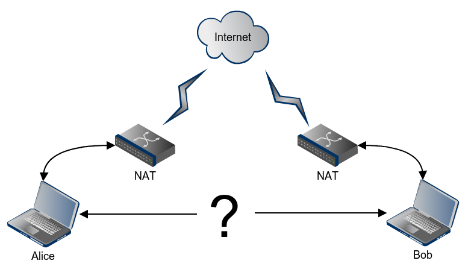
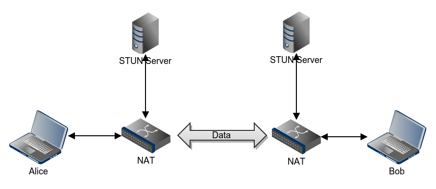
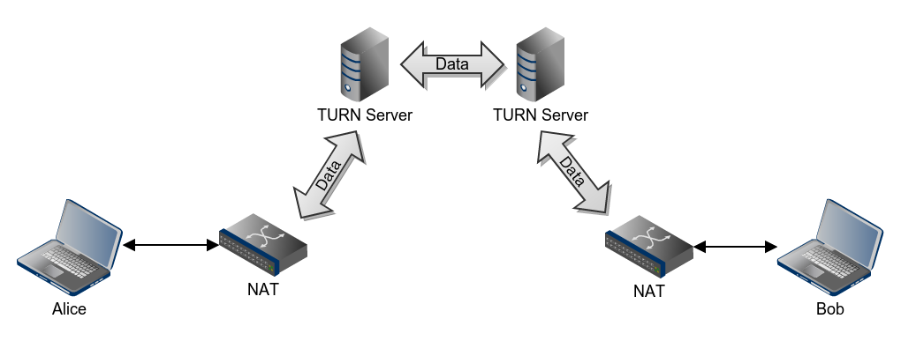
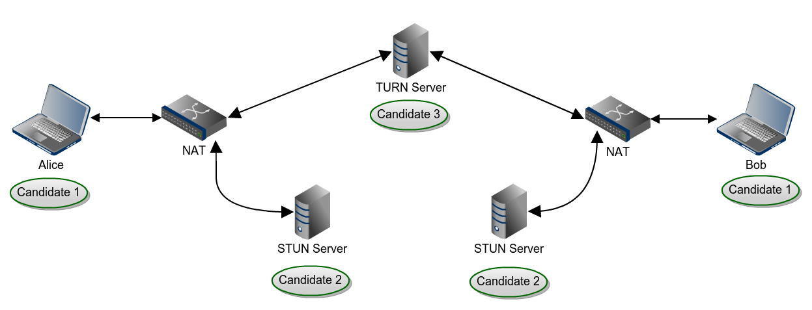
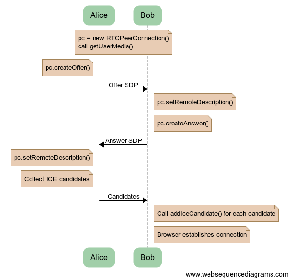

P2P Connection

Ідея - зробити можливим передачу потокового відео/аудіо (чи інших даних) напряму між браузерами.
Session Traversal Utilities for NAT (STUN )

Якщо коротко, то STUN сервер потрібен для визначення свого зовнішного ІР
Traversal Using Relay NAT (TURN )

Протокол дозволяє вузлу за НАТ отримувати вхідні дані.
Interactive Connectivity Establishment (ICE )

WebRTC Components:
MediaStream (aka getUserMedia)
RTCPeerConnection
RTCDataChannel
MediaStream
(aka getUserMedia)
window.URL = window.URL || window.webkitURL;
navigator.getUserMedia = navigator.getUserMedia || navigator.webkitGetUserMedia || navigator.mozGetUserMedia || navigator.msGetUserMedia;
navigator.getUserMedia(
{video: true, audio: true}, // constraints object
function(localMediaStream){ // success callback
var video = document.createElement("video");
video.autoplay = true;
video.src = window.URL.createObjectURL(localMediaStream);
document.body.appendChild(video);
},
function(error){ // failure callback
console.error(error);
}
);
RTCPeerConnection
packet loss concealment
echo cancellation
bandwidth adaptivity
dynamic jitter buffering
automatic gain control
noise reduction and suppression
image 'cleaning'
Компонент, який забезпечує стабільне та ефективне з’єднання між юзерами
RTCDataChannel
API for high performance, low latency, peer-to-peer communication of arbitrary data
WebRTC Connection Process

Caveats
Peers must be present with local streaming video before sending offer/answer SDP
For 'Answerer'; Do not add ICE candidate until the peer generates the 'Answer SDP'
Once remote media starts streaming stop adding ICE candidates
Never create 'Answer SDP' until you get the 'Offer SDP'
{kind=link}